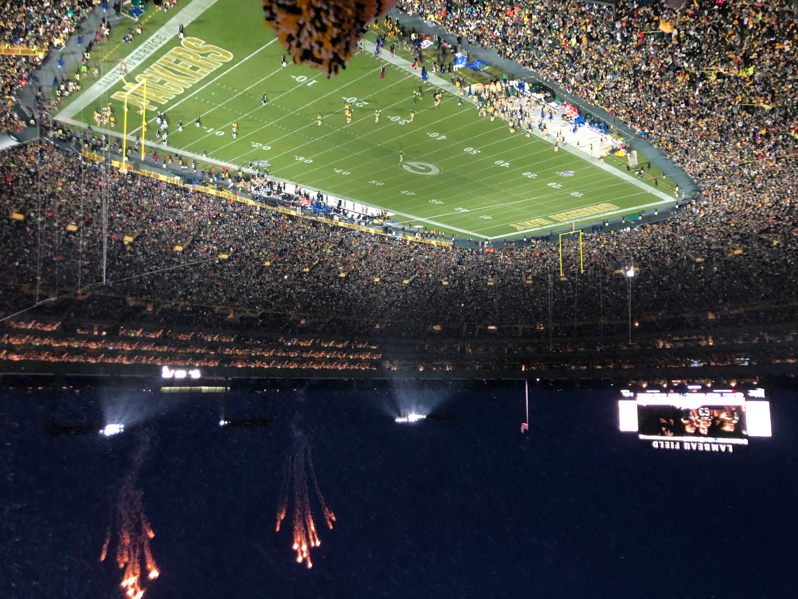
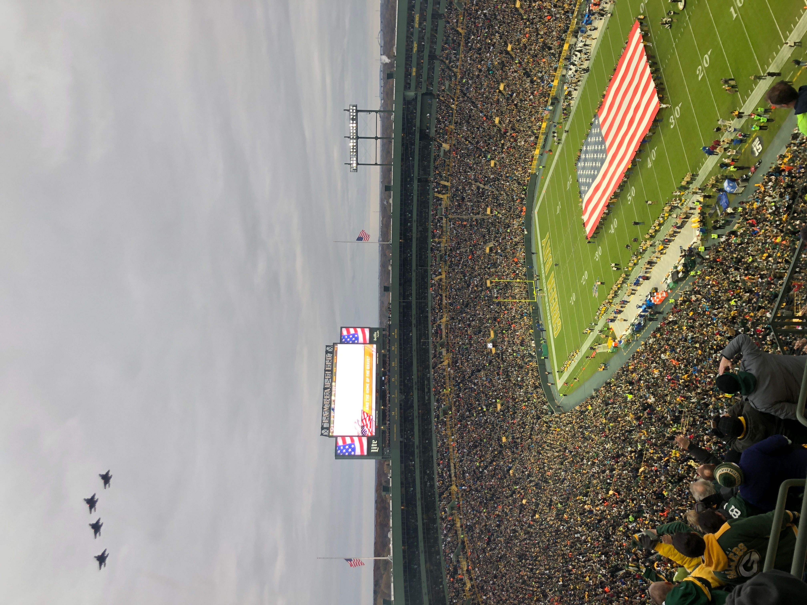
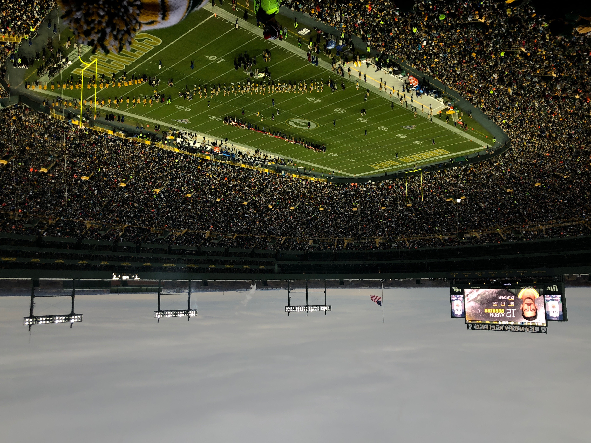
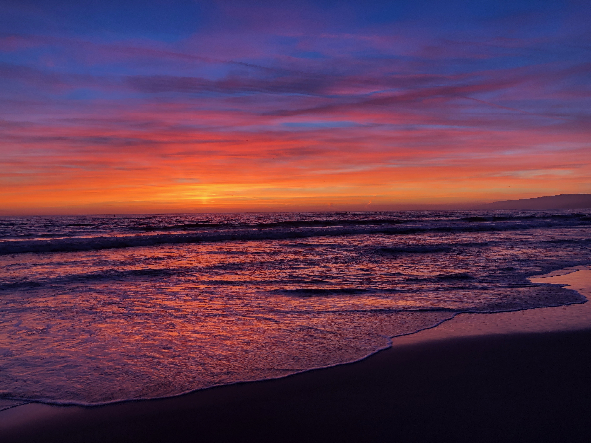
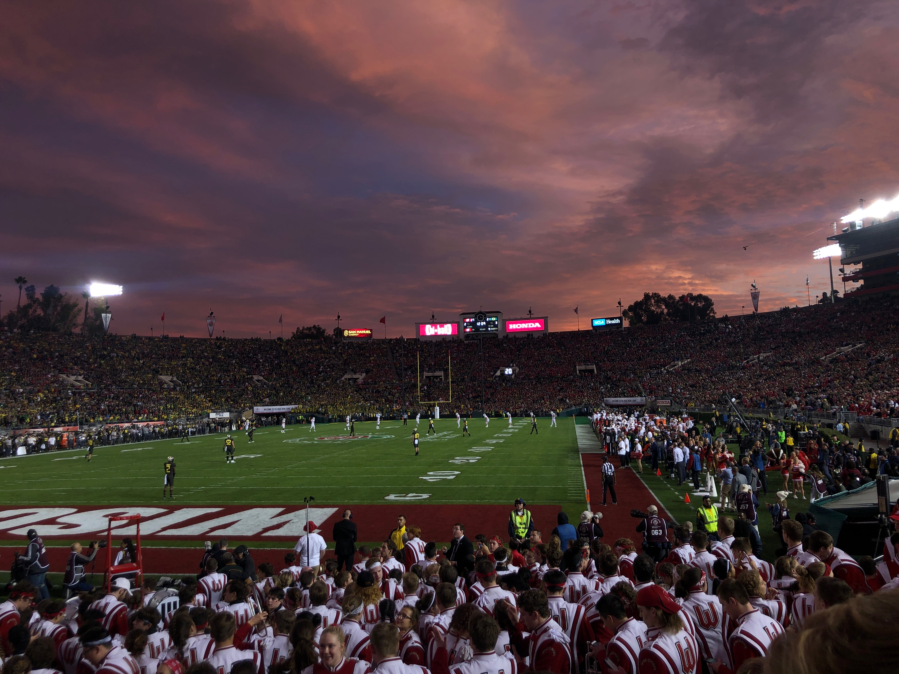
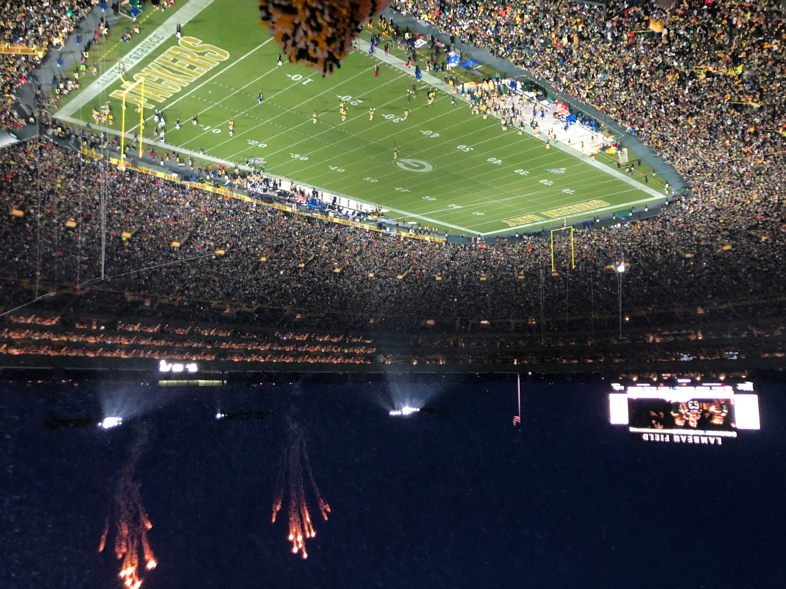
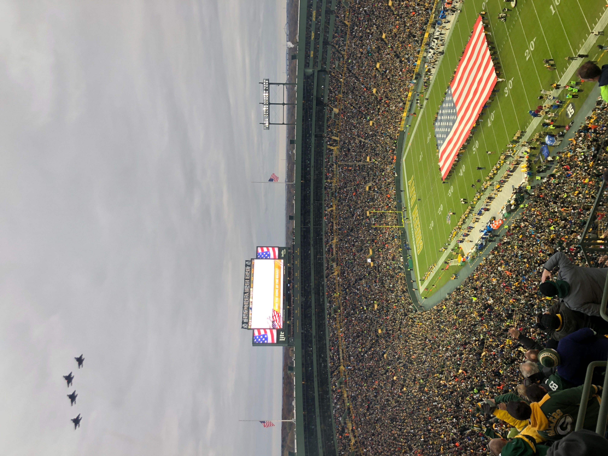
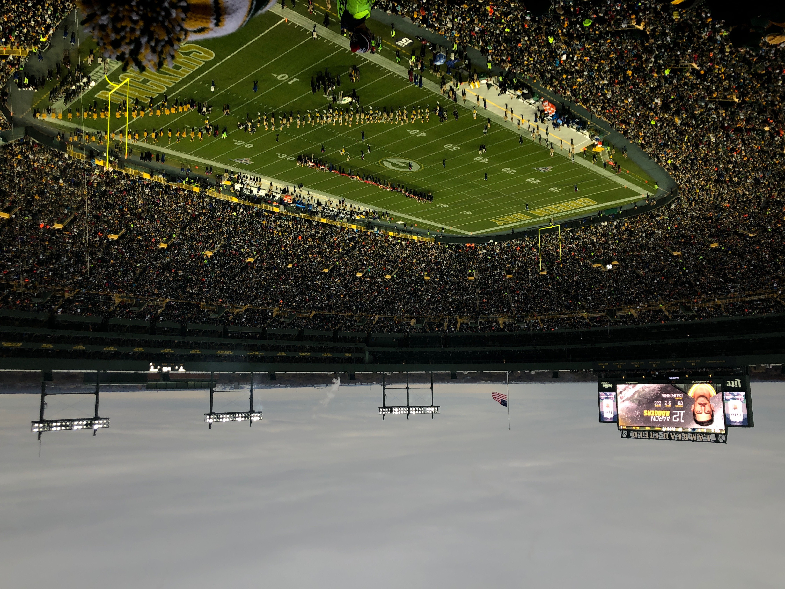
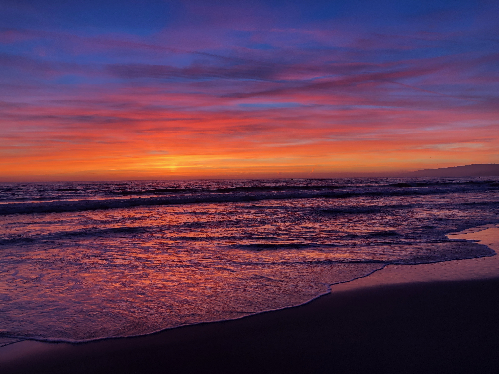
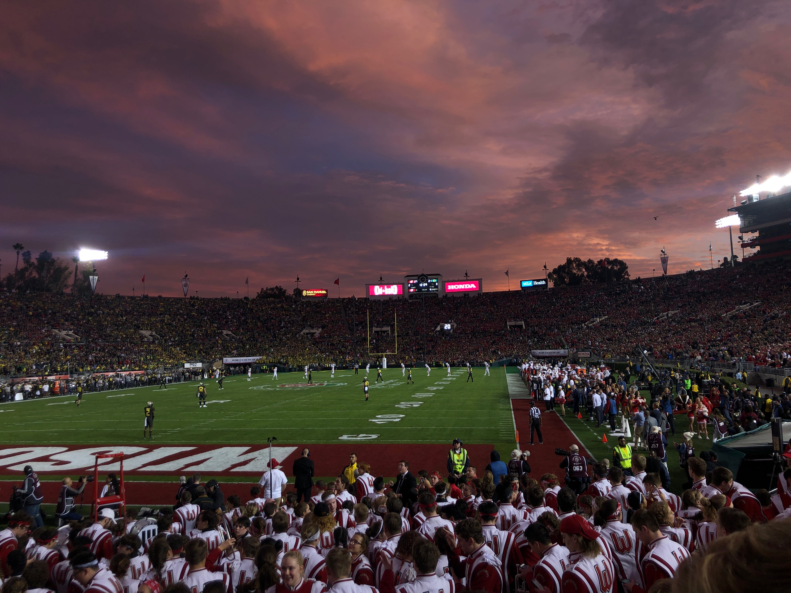

The purpose behind using my iPhone camera is to capture a single moment. I only take one picture, regardless of the quality. The reasoning behind this is that the one picture symbolizes a unique moment.
The more time spent on making sure the quality of the picture is good, the less time is spent focusing on the quality of the moment. I prefer a perfect moment and a blurry picture than a perfect picture of a blurry moment.
Here are some of the pictures I have taken
 








